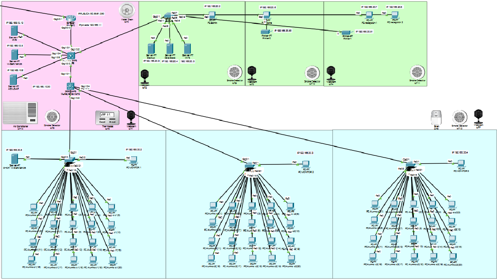

Topología General de la Red Local
La red implementada está estrictamente segmentada para aislar el tráfico sensible del tráfico de usuarios. La interconexión y la seguridad perimetral se gestionan desde el Router Principal (R1) y el Switch Multicapa (Core).
Estructura de la Red
La red local consta de:
- Una sala de servidores a la cual definimos con la VLAN 10
- una VLAN 20 dedicada para la administración
- una VLAN 30 dedicada a las aulas
Todo el tráfico se agrega en el Switch Multicapa y se enruta en el Router R1.
